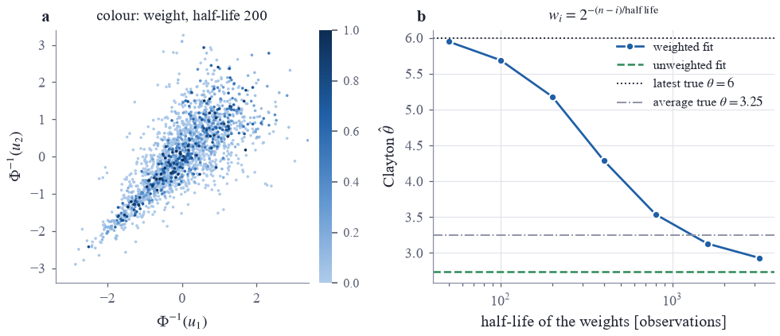
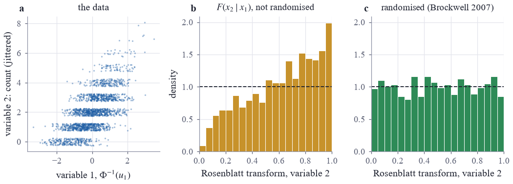
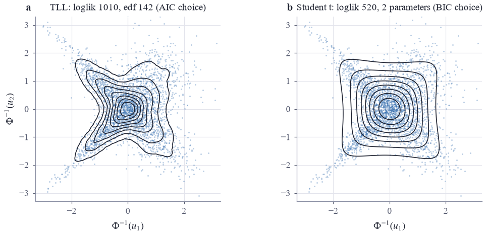
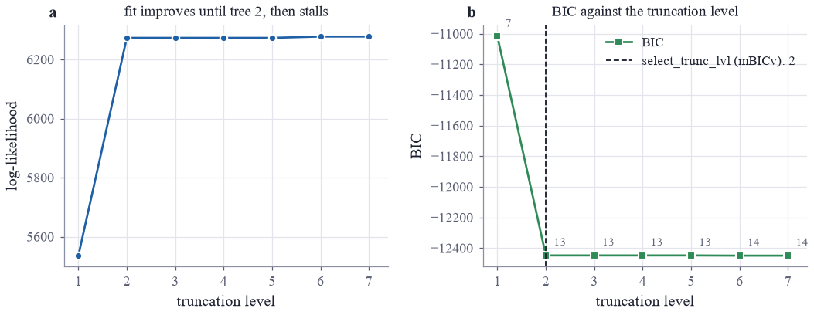
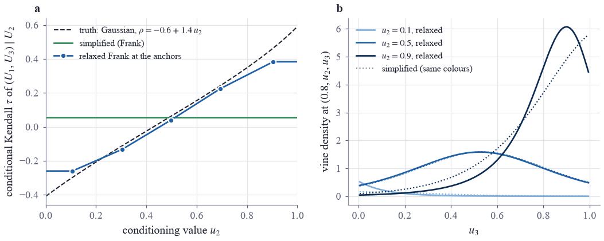
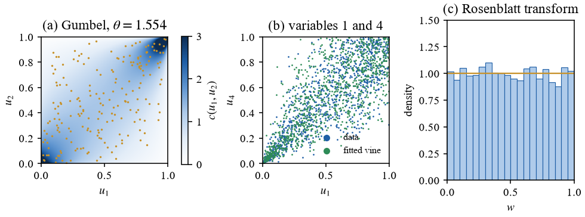

Python package¶
The fortvine Python package lets you use the library from Python with NumPy arrays. It is a
binding, not a port: every density, h-function, fit, family selection, vine selection,
Rosenblatt transform and simulation is computed by the compiled Fortran library through its
C interface. Python converts arrays and family names into the layout the C
routines expect and wraps what they return in two classes, Bicop and Vinecop. The class and
method names follow pyvinecopulib, so code
written for it needs few changes.
Besides the fv_* routines of src/fortvine.f90, the package calls src/fortvine_capi.f90
(the fvc_* routines), a C interface to the typed Fortran API (fortvine_api). Through it
the Python package has everything the Fortran API offers: observation weights, discrete and
mixed margins, the nonparametric families tll and bernstein, every selection control
(select_trunc_lvl, select_threshold, fast_mle, ...), non-simplified vines (relax),
pdf_grid, the fit cache, the abort flag, parameter bounds and gen_flip. Nothing is
recomputed in Python.
Installation¶
The wheels on PyPI (Linux x86_64, macOS arm64 and x86_64, Windows x86_64) contain the compiled
library, so no compiler is needed. Elsewhere pip builds the package from the source
distribution, which needs gfortran on the PATH (set FC to choose another compiler).
From a clone of the repository, or straight from GitHub, the package is always compiled from
the Fortran sources in src/:
The build compiles src/fortvine_ad.f90, src/fortvine.f90, src/fortvine_api.f90 and
src/fortvine_capi.f90 with -O3 -fopenmp, without -march=native, so the library runs on any CPU of the
platform. It is placed in fortvine/_lib/. On Windows the gfortran, OpenMP, quadmath and
winpthread runtimes are linked statically into libfortvine.dll, which then depends only on
system DLLs and loads in a fresh virtual environment. On Linux and macOS the library uses the
compiler's runtime libraries; the wheels bundle them (auditwheel, delocate). FORTVINE_LIB points the package at a
library built elsewhere.
Quick start¶
import numpy as np
import fortvine as fv
cop = fv.Bicop("clayton", rotation=0, parameters=[2.0])
u = cop.simulate(2000, seed=1) # (2000, 2) array in (0, 1)
cop.pdf(u[:5]), cop.hfunc1(u[:5]), cop.cdf(u[:5])
est = fv.Bicop("clayton").fit(u) # maximum likelihood
best = fv.Bicop().select(u, family_set=["gaussian", "clayton", "gumbel", "frank"])
x = np.random.default_rng(0).standard_normal((1000, 4)).cumsum(axis=1)
v = fv.to_pseudo_obs(x)
vc = fv.Vinecop.from_data(v, criterion="bic", trunc_lvl=2, num_threads=4)
print(vc)
vc.loglik(v), vc.npars, vc.simulate(500, seed=2)
Data are copula data: an (n, d) array with values in \((0, 1)\), one row per observation.
Because the C interface keeps observations in the last Fortran dimension, such a C-order
array is passed to Fortran without a copy. Families are given by name (case-insensitive, as
fv_fam_name spells them, e.g. "bb1" or "Archimax(gamma|HuslerReiss)") or by integer
code, including the generic codes 10000 and up. fv.families() lists all 111.
API¶
| Python | does | C routine |
|---|---|---|
Bicop(family, rotation, parameters, aux=None) |
pair copula; family, family_code, rotation, parameters, npars, aux, is_nonparametric |
|
.pdf(u), .logpdf(u) |
density, log-density on u of shape \((n, 2)\) |
fv_bicop_eval; fvc_bicop_eval for tll / bernstein |
.cdf(u) |
distribution function | fvc_bicop_eval |
.hfunc1(u), .hfunc2(u) |
\(h_1 = P(U_2 \le u_2 \mid U_1 = u_1)\), \(h_2 = P(U_1 \le u_1 \mid U_2 = u_2)\) | as .pdf |
.hinv1(u), .hinv2(u) |
inverses in the second / first argument | as .pdf |
.loglik(u=None), .aic(u=None), .bic(u=None) |
log-likelihood on u, or of the last fit; AIC, BIC with npars |
as .pdf |
.fit(u, method, ..., weights=None) |
estimate the parameters (tll / bernstein: the estimate aux) of the current family and rotation |
fvc_bicop_fit |
.select(u, family_set, criterion, ..., weights=None) |
choose family, rotation and parameters | fvc_bicop_fit |
.parameters_lower_bounds, .parameters_upper_bounds |
the parameter box | fvc_par_bounds |
.simulate(n, seed) |
\(u_2 = h_1^{-1}(w \mid u_1)\) for uniform \(u_1, w\) | as .pdf |
Vinecop(d, var_types=None) |
empty vine: d, trunc, order, st, fam, rot, par, edge_ll, aux, disc, threshold |
|
.set_dvine(order), .set_cvine(order) |
fixed D- or C-vine structure | fvc_vine_structure |
Vinecop.from_data(u, ...), .select(u, ..., weights, var_types, select_trunc_lvl, select_threshold) |
select structure (unless fixed), families, parameters | fvc_vine_select |
.pdf(u), .loglik(u=None), .aic(u=None), .bic(u=None) |
vine density; log-likelihood; AIC, BIC | fvc_vine_eval |
.pdf_grid(ug, target) |
density on a prediction grid | fvc_vine_pdf_grid |
.rosenblatt(u, randomize_discrete=True, seed=1), .inverse_rosenblatt(w) |
Rosenblatt transform and its inverse | fvc_vine_eval |
.simulate(n, seed) |
inverse Rosenblatt transform of uniforms | fvc_vine_eval |
.relax(u, target=0, mode="test", ..., weights=None), .unrelax() |
non-simplified edges; nrel, relaxed_edges, erel, wa, wk, pk |
fvc_vine_relax |
.rel_params(u) |
parameters (n, nrel, 3) of the relaxed edges at the samples u |
fvc_vine_rel_params |
.matrix, .families, .rotations, .parameters, .npars, .var_types |
R-vine matrix; pair copulas per tree; parameter count; variable types | fvc_vine_matrix |
.get_pair_copula(t, e), .set_pair_copula(t, e, bicop) |
one edge as a Bicop |
|
to_pseudo_obs(x), kendall_tau(x, y) |
ranks / \((n + 1)\); Kendall's \(\tau_b\) | fv_pseudo_obs, fv_kendall_tau |
families(), family_group(name) |
the family list; the codes of a family group | fvc_families |
par_bounds(family), gen_flip(family, parameters) |
parameter box; the transposed generic copula | fvc_par_bounds, fvc_gen_flip |
fitcache_enable(capacity), fitcache_clear(), fitcache_disable(), fitcache_stats() |
the pair-fit cache | fvc_fitcache |
set_abort(flag=True) |
the abort flag of running fits and selections | fvc_set_abort |
cite(), __version__, NAUX, NK |
the citation; the version; length of a tll / bernstein estimate; anchors of a relaxed edge | fvc_naux, fvc_nk |
The options of select are those of fv_controls: family_set (default: the
fv_controls default, codes 0 to 22), criterion ("loglik", "aic", "bic", "mbic",
"mbicv"), method ("mle", "itau"), preselect, allow_rotations, fast_mle,
tau_mode ("auto", "exact", "approx"), psi0 and num_threads (default: the
environment variable FORTVINE_THREADS, otherwise half the logical CPUs — the same rule as the
Fortran library), and the keyword-only weights; for vines also
tree_criterion ("tau", "rho", "joe", "hoeffd", "xi", "mi", "ferreira"),
tree_algorithm ("prim", "kruskal"), trunc_lvl, threshold, fixed and the
keyword-only var_types, select_trunc_lvl and select_threshold. The pyvinecopulib and
Fortran spellings are accepted too: selection_criterion, parametric_method, tree_crit,
tree_algo, preselect_families, select_trunc. fit takes method, fast_mle,
tau_mode, num_threads and weights.
A family_set is a list of family names, codes or group names; a single name or group is
accepted as well. The groups (family_group(name) returns their codes):
| group | codes | Fortran |
|---|---|---|
"default" |
0 to 22, every parametric hand-coded family except tev |
fv_controls default |
"parametric" |
0 to 11 | FV_PARAMETRIC |
"all_parametric" |
0 to 23 | FV_ALL |
"nonparametric" |
24 (tll), 25 (bernstein) |
FV_NONPAR |
"all" |
0 to 25 | FV_NCLASSIC families |
"one_par" |
1, 3, 4, 5, 6 | FV_ONE_PAR |
"generic" |
the 85 generic codes 10000 and up | fv_generic_families() |
In a Vinecop the arrays are indexed [tree, edge] from 0, the transpose of the Fortran
fam(edge, tree): edge e of tree t joins variables order[e] and order[st[t, e] - 1]
(the labels in order and st are 1-based, as in Fortran). par is (d, d, 3), aux is
(d, d, naux) with naux = NAUX when the vine has a tll or bernstein edge and 1
otherwise, and disc is a (d,) boolean array of the discrete variables. Seeds make
simulate reproducible; the uniforms come from NumPy, so the draws differ from Fortran's
simulate with the same seed. Bicop and Vinecop hold only NumPy arrays and numbers, so
they pickle (and copy) like any Python object, including their estimates, discreteness flags
and non-simplified edges.
Vine selection and relax run in a worker thread when they are called from the main thread,
so Ctrl-C (KeyboardInterrupt) interrupts them: the package sets the abort flag, waits until
the Fortran code returns (a few milliseconds), clears the flag and re-raises.
Observation weights¶
weights (one value per row) is accepted by Bicop.fit, Bicop.select, Vinecop.select
and Vinecop.relax. The weighted log-likelihood is maximised and weighted Kendall taus build
the trees. With integer weights a weighted fit is the fit to the sample with rows repeated:
import numpy as np
import fortvine as fv
u = fv.Bicop("clayton", parameters=[2.0]).simulate(1000, seed=1)
w = np.random.default_rng(2).integers(1, 3, len(u)) # weights 1 or 2
a = fv.Bicop("clayton").fit(u, weights=w)
b = fv.Bicop("clayton").fit(np.repeat(u, w, axis=0)) # rows repeated w times
print("weighted fit :", a.parameters, round(a.loglik(), 4))
print("duplicated rows:", b.parameters, round(b.loglik(), 4))
x = np.random.default_rng(0).standard_normal((1000, 4)).cumsum(axis=1)
v = fv.to_pseudo_obs(x)
recent = 0.998 ** np.arange(len(v))[::-1] # time-decay weights
vc = fv.Vinecop.from_data(v, weights=recent, family_set=["gaussian", "clayton", "gumbel", "frank"])
print(vc.families, round(vc.loglik(), 2))
weighted fit : [1.87015409] 549.3913
duplicated rows: [1.87015409] 549.3913
[['gaussian', 'gaussian', 'gaussian'], ['clayton', 'clayton'], ['clayton']] 663.87
loglik() without data returns the weighted log-likelihood of the fit.

Discrete and mixed margins¶
Discrete variables follow pyvinecopulib's convention (Discrete data
explains the likelihood). var_types gives "c" or "d" per variable, and with \(k\) discrete
variables the data are an \((n, d + k)\) array: the first \(d\) columns hold \(F(x)\) of every
variable, the last \(k\) columns \(F(x^-)\) of the discrete ones, in their order. An \((n, 2d)\)
array with \(F(x^-)\) of every variable in columns \(d, \dots, 2d - 1\) is accepted too (only the
discrete columns are read). The vine keeps the flags (disc, var_types), and pdf,
loglik, rosenblatt and pdf_grid then expect data of the same form.
import numpy as np
from scipy.stats import poisson
import fortvine as fv
# a Gaussian D-vine 1-2-3; variable 2 is observed as a Poisson(2) count
truth = fv.Vinecop().set_dvine([1, 2, 3])
truth.fam[0, :2] = 1 # gaussian
truth.par[0, :2, 0] = [0.7, 0.5]
v = truth.simulate(2000, seed=1)
k = poisson.ppf(v[:, 1], 2.0) # the counts
# F(x) of the three variables, then F(x-) of the discrete one: an (n, d + 1) array
u = np.column_stack([v[:, 0], poisson.cdf(k, 2.0), v[:, 2], poisson.cdf(k - 1, 2.0)])
vc = fv.Vinecop.from_data(u, var_types=["c", "d", "c"], family_set=["indep", "gaussian", "frank"])
print(vc)
print("var_types:", vc.var_types, " loglik %.2f" % vc.loglik(u))
r = vc.rosenblatt(u, seed=3) # Brockwell's randomised transform
print("Rosenblatt means", r.mean(axis=0).round(4), " variances", r.var(axis=0).round(4))
fortvine vine copula: d = 3, trunc = 2
order: 1 2 3
discrete: 2
tree 1 edge 1: gaussian rot 0 par 0.6995
tree 1 edge 2: gaussian rot 0 par 0.5155
tree 2 edge 1: indep rot 0 par
var_types: ['c', 'd', 'c'] loglik 894.19
Rosenblatt means [0.4933 0.5008 0.5083] variances [0.0846 0.0829 0.0854]
Both latent correlations (0.7 and 0.5) are recovered from a count with a handful of values,
and the randomised Rosenblatt transform has the mean \(1/2\) and variance \(1/12\) of uniforms.
rosenblatt(u, randomize_discrete=False) returns \(F(x_k \mid \dots)\) itself; seed (non-zero)
selects the randomisation. inverse_rosenblatt and simulate return the copula sample on the
continuous scale; apply the marginal quantile functions to get discrete data. The test suite
rebuilds such a vine in pyvinecopulib and finds the same discrete density to \(10^{-6}\)
relative. relax is not available for vines with discrete variables, and a Bicop has no
discrete margins (use a two-dimensional Vinecop).

Nonparametric families¶
tll (24) and bernstein (25) (Nonparametric pair copulas) are
fitted like any other family. Their estimate is the vector aux (NAUX = 933 values); their
parameters are empty, rotation is ignored, and npars is the effective number of
parameters of the estimate, the penalty that AIC and BIC use. They are not in the default
family set: name them or use the "nonparametric" or "all" group.
import numpy as np
import fortvine as fv
# an equal mixture of a Clayton and a 90-degree Gumbel copula
rng = np.random.default_rng(5)
a = fv.Bicop("clayton", parameters=[4.0]).simulate(3000, seed=1)
b = fv.Bicop("gumbel", 90, [3.0]).simulate(3000, seed=2)
u = np.where(rng.random((3000, 1)) < 0.5, a, b)
tll = fv.Bicop("tll").fit(u)
print(tll, " loglik %.2f" % tll.loglik(), " aux", tll.aux.shape)
print("density at (0.1,0.1), (0.5,0.5), (0.9,0.1):", tll.pdf(np.array([[.1, .1], [.5, .5], [.9, .1]])).round(3))
for crit in ("bic", "aic"):
best = fv.Bicop().select(u, family_set=["parametric", "nonparametric"], criterion=crit)
print(crit, "->", best.family, " loglik %.2f npars %.2f" % (best.loglik(), best.npars))
vc = fv.Vinecop.from_data(np.column_stack([u, rng.random(3000)]), family_set=["indep", "gaussian", "tll"])
print(vc)
print("npars %.2f" % vc.npars, " aux", vc.aux.shape)
Bicop(family='tll', npars=142.21) loglik 1009.79 aux (933,)
density at (0.1,0.1), (0.5,0.5), (0.9,0.1): [2.81 1.835 1.688]
bic -> student loglik 520.45 npars 2.00
aic -> tll loglik 1009.79 npars 142.21
fortvine vine copula: d = 3, trunc = 2
order: 1 2 3
tree 1 edge 1: tll edf 142.21
tree 1 edge 2: indep rot 0 par
tree 2 edge 1: indep rot 0 par
npars 142.21 aux (3, 3, 933)
TLL nearly doubles the log-likelihood of the best parametric family (Student), but with 142
effective parameters: BIC keeps the Student copula, AIC takes TLL. Every evaluation (pdf,
h-functions and their inverses, cdf, the vine methods) uses the stored estimate, and
get_pair_copula / set_pair_copula carry it between a vine and a Bicop. In families()
the two families have npars = -1.

Truncation, thresholding and other controls¶
select_trunc_lvl=True lets mBICv choose the truncation level and select_threshold=True
the threshold below which edges are set to independence, as vinecopulib's options of the same
names (the threshold found is in vc.threshold):
import numpy as np
import fortvine as fv
rng = np.random.default_rng(4) # a Gaussian AR(1) chain: only tree 1 matters
z = np.zeros((2000, 6))
z[:, 0] = rng.standard_normal(2000)
for j in range(1, 6):
z[:, j] = 0.7 * z[:, j - 1] + np.sqrt(0.51) * rng.standard_normal(2000)
u = fv.to_pseudo_obs(z)
full = fv.Vinecop.from_data(u)
trunc = fv.Vinecop.from_data(u, select_trunc_lvl=True)
thr = fv.Vinecop.from_data(u, select_threshold=True, criterion="mbicv")
print("full : trunc", full.trunc, " npars", full.npars, " loglik %.2f" % full.loglik())
print("mBICv trunc: trunc", trunc.trunc, " npars", trunc.npars, " loglik %.2f" % trunc.loglik())
print("mBICv thr : threshold %.4f" % thr.threshold, " npars", thr.npars, " loglik %.2f" % thr.loglik())
alt = fv.Vinecop.from_data(u, tree_crit="rho", tree_algo="kruskal", parametric_method="itau",
fast_mle=True, preselect=False, allow_rotations=False, trunc_lvl=2)
print("rho/kruskal/itau, 2 trees:", alt.families)
full : trunc 5 npars 5 loglik 3264.58
mBICv trunc: trunc 1 npars 5 loglik 3264.58
mBICv thr : threshold 0.3167 npars 5 loglik 3264.58
rho/kruskal/itau, 2 trees: [['gaussian', 'gaussian', 'gaussian', 'gaussian', 'gaussian'], ['indep', 'indep', 'indep', 'indep']]
BIC already sets every edge above the first tree to independence; with select_trunc_lvl the
vine is also cut after tree 1.

Non-simplified vines¶
relax(u, target=0, mode="test") lets the parameters of edges of trees \(t \ge 2\) vary with
their conditioning variables (see relax):
target is the variable label whose edges may be relaxed (0: any), mode="test" relaxes the
edges whose constant-conditional-correlation test rejects at 5 %, mode="all" every eligible
edge; method, fast_mle, tau_mode, num_threads and weights control the local fits.
The relaxed edges are stored in the vine (nrel, relaxed_edges as 0-based (tree, edge),
and the Fortran arrays erel ((nrel, 2): edge, tree, 1-based), wa ((nrel, d)), wk
((nrel, NK)) and pk ((nrel, NK, 3))). pdf, loglik and pdf_grid use them;
rosenblatt, inverse_rosenblatt and simulate use par (the middle-anchor values), as in
Fortran. unrelax() deletes the records, and select starts from a simplified vine again.
import numpy as np
from scipy.stats import norm
import fortvine as fv
# the copula of (U1, U3) given U2 changes with U2: not a simplified vine
rng = np.random.default_rng(1)
n = 2000
u2, w1, w3 = rng.random(n), rng.random(n), rng.random(n)
x1 = fv.Bicop("clayton", parameters=[2.0]).hinv1(np.column_stack([u2, w1]))
rho = -0.6 + 1.4 * u2
v3 = norm.cdf(rho * norm.ppf(w1) + np.sqrt(1 - rho**2) * norm.ppf(w3))
x3 = fv.Bicop("frank", parameters=[5.0]).hinv1(np.column_stack([u2, v3]))
u = np.column_stack([x1, u2, x3])
vc = fv.Vinecop().set_dvine([1, 2, 3]).select(u, family_set=["indep", "gaussian", "clayton", "frank"])
print("simplified : loglik %.2f npars %d" % (vc.loglik(), vc.npars))
vc.relax(u, target=0, mode="test")
print("non-simplified: loglik %.2f npars %d relaxed edges %s" % (vc.loglik(), vc.npars, vc.relaxed_edges))
print("check: sum log pdf = %.2f" % vc.loglik(u))
print(vc)
print("anchors wk:", vc.wk.round(3), " loadings wa:", vc.wa.round(3))
# predictive density of variable 3 on a grid, for the first two samples
g = np.repeat(u[:2, None, :], 5, axis=1)
g[:, :, 2] = [0.1, 0.3, 0.5, 0.7, 0.9]
print(vc.pdf_grid(g, target=3).round(4))
simplified : loglik 1342.48 npars 3
non-simplified: loglik 1521.02 npars 7 relaxed edges [(1, 0)]
check: sum log pdf = 1521.02
fortvine vine copula: d = 3, trunc = 2
order: 3 2 1
tree 1 edge 1: frank rot 0 par 5.0930
tree 1 edge 2: clayton rot 0 par 1.9290
tree 2 edge 1: frank rot 0 par 0.3364
non-simplified tree 2 edge 1: first parameter at the w anchors -2.5260 -1.2442 0.3364 2.0974 3.9420
anchors wk: [[-1.249 -0.51 -0.004 0.506 1.305]] loadings wa: [[0. 1. 0.]]
[[0.8766 1.6637 2.1001 1.5994 0.8216]
[0.0397 0.1 0.2134 0.2932 0.1411]]
The test relaxes the single second-tree edge; its Frank parameter now runs from \(-2.5\) to \(3.9\) across the anchors of \(w = \Phi^{-1}(u_2)\), and the log-likelihood gains 179 for four extra parameter sets.

Prediction grids¶
pdf_grid(ug, target) evaluates the vine density on ug of shape (n, bins, d): for each of
the n samples, bins points that differ only in variable target (1-based label, as in
order). It returns (n, bins), the same values as pdf at those points, but edges that do
not involve target are evaluated once per sample (the example above). With discrete
variables the last axis is d + k (or 2d), as for pdf. After relax(target=0) the
conditioning values of relaxed edges are taken from the first bin of each sample, which is
exact when no relaxed edge conditions on target (see the note in
relax).
Fit cache, abort flag, bounds¶
import numpy as np
import fortvine as fv
u = fv.to_pseudo_obs(np.random.default_rng(0).standard_normal((1500, 5)).cumsum(axis=1))
fv.fitcache_enable(20000)
a = fv.Vinecop.from_data(u)
print("after the first select :", fv.fitcache_stats())
b = fv.Vinecop.from_data(u)
print("after the second select:", fv.fitcache_stats(), " same loglik:", a.loglik() == b.loglik())
fv.fitcache_disable()
fv.set_abort(True) # e.g. from another thread or a GUI callback
print("aborted select: trunc", fv.Vinecop.from_data(u).trunc)
fv.set_abort(False)
print(fv.par_bounds("bb1"))
print(fv.gen_flip("tawn-asymmixed", [0.5, 0.5]))
after the first select : FitCacheStats(hits=0, misses=260, used=260)
after the second select: FitCacheStats(hits=260, misses=260, used=260) same loglik: True
aborted select: trunc 0
(array([0., 1.]), array([7., 7.]))
(10011, array([0.625 , 0.42105263]))
The fit cache is shared by every fit and selection while it is
enabled; fitcache_clear() empties it and resets the counters. With the abort flag set, fits
return at once and a selection stops (its result is to be discarded); the flag stays set until
set_abort(False). par_bounds is the MLE search box of a family, and gen_flip the generic
family and parameters of the transposed copula \(C(u_2, u_1)\) (other families are returned
unchanged).
Worked example¶
This is the program of the Quick start in Python
(example/python/python_quickstart.py in the repository): a Gumbel pair copula that is
evaluated, simulated, fitted and selected, then a four-dimensional C-vine with Clayton pairs
that is simulated, selected from the sample and simulated again.
import numpy as np
import fortvine as fv
n = 1000
# one pair copula: Gumbel with theta = 1.5 (Kendall tau = 1 - 1/theta = 1/3)
cop = fv.Bicop("gumbel", parameters=[1.5])
g = np.array([0.1, 0.5, 0.95])
print("density c(u,u) :", cop.pdf(np.column_stack([g, g])).round(4))
print("h1(u | u) :", cop.hfunc1(np.column_stack([g, g])).round(4))
u12 = cop.simulate(n, seed=42) # u2 = h1^-1(w | u1)
print("sample Kendall tau: %.4f" % fv.kendall_tau(u12[:, 0], u12[:, 1]))
est = fv.Bicop("gumbel").fit(u12)
print("Gumbel MLE theta : %.4f loglik %.3f" % (est.parameters[0], est.loglik()))
best = fv.Bicop().select(u12)
print("BIC selection :", best)
# a 4-dimensional vine: a C-vine with Clayton pairs as the truth
truth = fv.Vinecop().set_cvine([1, 2, 3, 4])
truth.fam[0, :3] = 3; truth.par[0, :3, 0] = 3.0 # tree 1: Clayton(3)
truth.fam[1, :2] = 3; truth.par[1, :2, 0] = 1.0 # tree 2: Clayton(1)
u = truth.simulate(n, seed=1)
vc = fv.Vinecop.from_data(u) # structure, families, parameters
print(vc)
print("loglik %.2f (truth %.2f) parameters %d" % (vc.loglik(u), truth.loglik(u), vc.npars))
print("five draws from the fitted vine:")
print(vc.simulate(5, seed=2).round(4))
Output (Windows, Python 3.14, gfortran 16):
density c(u,u) : [1.8518 1.2196 4.5946]
h1(u | u) : [0.2052 0.5282 0.7701]
sample Kendall tau: 0.3683
Gumbel MLE theta : 1.5544 loglik 202.420
BIC selection : Bicop(family='gumbel', rotation=0, parameters=[1.55436957060358])
fortvine vine copula: d = 4, trunc = 3
order: 2 3 1 4
tree 1 edge 1: joe rot 180 par 3.9498
tree 1 edge 2: joe rot 180 par 4.1778
tree 1 edge 3: clayton rot 0 par 3.1232
tree 2 edge 1: clayton rot 0 par 0.3395
tree 2 edge 2: clayton rot 0 par 0.6397
tree 3 edge 1: clayton rot 0 par 0.5037
loglik 2296.80 (truth 2308.14) parameters 6
five draws from the fitted vine:
[[0.0767 0.0961 0.1321 0.0919]
[0.0701 0.0766 0.0495 0.0551]
[0.1275 0.202 0.1577 0.1501]
[0.6095 0.7533 0.6169 0.6332]
[0.571 0.2968 0.2622 0.1873]]
The density and h-function values match the Fortran quick start digit for digit: both call the same compiled routines. The samples differ, because Python draws its uniforms with NumPy.
| quantity | \(n\) | Kendall \(\hat\tau\) | \(\hat\theta\) | log-likelihood |
|---|---|---|---|---|
| Gumbel pair, \(\theta = 1.5\), \(\tau = 1/3\) | 1000 | 0.368 | 1.554 | 202.42 |
The selected vine is not the true one edge for edge. Its first tree is the path 2-3-1-4
rather than the star around variable 4, two of its edges are survival Joe (joe rotated by
180 degrees, which has lower tail dependence like Clayton), and the third tree picks up a
little dependence. Its log-likelihood is still within 12 units of the truth's, with six
parameters where the truth has five. The Fortran quick start lands on the same structure.

(a) Density of the selected Gumbel copula (colour scale clipped at 3) with 200 of the simulated pairs. (b) Variables 1 and 4 of the C-vine sample (blue) and of a simulation of the same size from the fitted vine (green). (c) The Rosenblatt transform of the sample under the fitted vine, all four coordinates pooled: close to the uniform density (gold line), as expected for a well-specified model (the pairwise Kendall \(\tau\) of the transformed coordinates are all below 0.05).
The figure is drawn by the same script: python example/python/python_quickstart.py
docs/assets/python_example.png.
Tests¶
python/tests/test_basic.py checks that \(h_1^{-1}(h_1(u))\) is the identity, that densities
integrate to 1, that fitting recovers parameters, that selection finds the true family, that a
vine's log-likelihood equals the sum of its log-densities, that the Rosenblatt transform
round-trips, and that a generic family works. For the features of the typed API it checks that
a weighted fit equals the fit to the sample with duplicated rows (pair copula and vine), that
tll and bernstein densities are positive and integrate to 1 and their h-inverses
round-trip, that a discrete vine has the density pyvinecopulib computes for the same model,
that relax relaxes the non-simplified edge of a known example and keeps loglik() equal to
the sum of the log-densities, that pdf_grid equals pdf, that select_trunc_lvl truncates
a Markov chain, that the fit cache counts hits, that the abort flag and Ctrl-C stop a
selection, that gen_flip transposes asymmetric generic copulas, and that all objects pickle.
When pyvinecopulib is installed, a few densities and h-functions are compared with it (they
agree to \(10^{-6}\) relative).
Citing¶
If you use fortvine in published work, please cite
Shojaeezadeh, S. A. (2026). fortvine: a complete compendium to work on vine copula modeling. In preparation.
@unpublished{shojaeezadeh2026fortvine,
author = {Shojaeezadeh, Shahab Aldin},
title = {fortvine: a complete compendium to work on vine copula modeling},
year = {2026},
note = {In preparation. Software: https://github.com/Bluerrror/fortvine}
}
fortvine.cite() prints this reference and returns it as a string.